The Greeks did a lot for us. On this website, we're going to look through some things they did. Each card talks about something the Greeks gave us. Click them for more information on the topic.
Alphabet
Most of our alphabet comes from Latin, and the Latin alphabet is descended from the Greeks. You might be able to recognize some letters! Also, if you are wondering, the Greek Alphabet is derived from the Phoenician one.
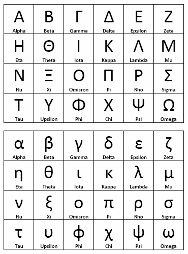Showering
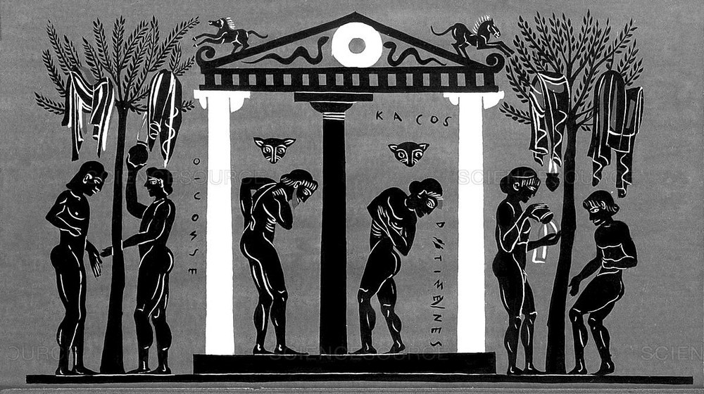The Greeks were the first people to shower like us. They'd have water falling down from the wall, cleaning the person under it.
Science & Maths
Many things we know about Maths and Science today were discovered/made by the Greeks! For example, did you know the Greek philosopher Democritus was the first person to believe that atoms were a thing, or that many Math symbols we use come from the Greeks?
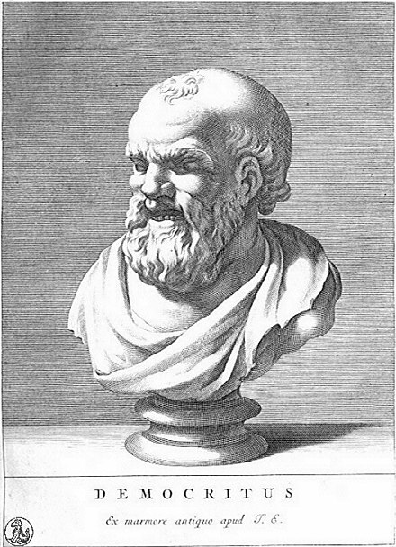The Olympics
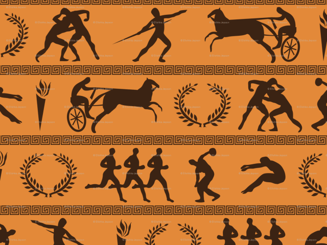The first Olympic games are said to have started in Ancient Greece. Dedicated to the Greek Gods, these sport competitions included chariot racing, running and boxing and prize winners were awarded laurel wreath crowns.
Democracy
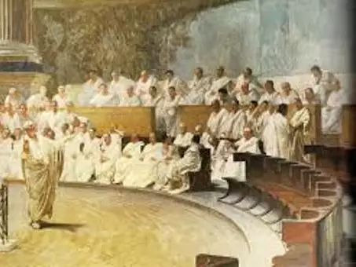Modern Western democracy is partly based in ancient Greek politics. For example, in Athens any citizen could speak to the assembly and vote on decisions by simply holding up their hands.
Theatre
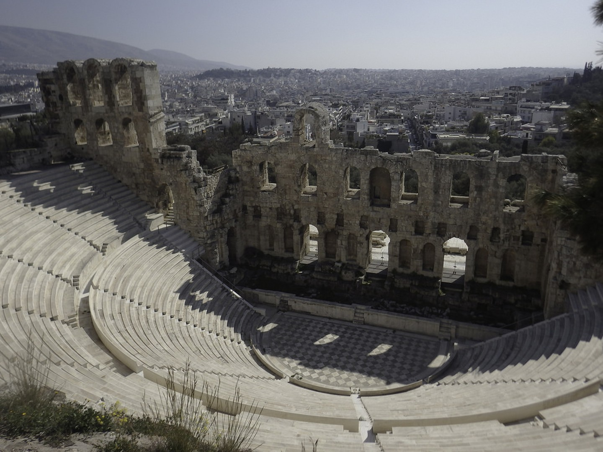The first forms of a theatre started in ancient Greece. They were a bit different though, with most of them being based on the tragedy genre, having sad endings.
Lighthouse
The idea of using light from a tower to guide ships into the port came from the Greeks. Indeed, the first lighthouse ever built stood in Alexandria in Egypt, a city founded by Alexander the Great in 332 BC and part of the Hellenistic kingdom.
Odometer
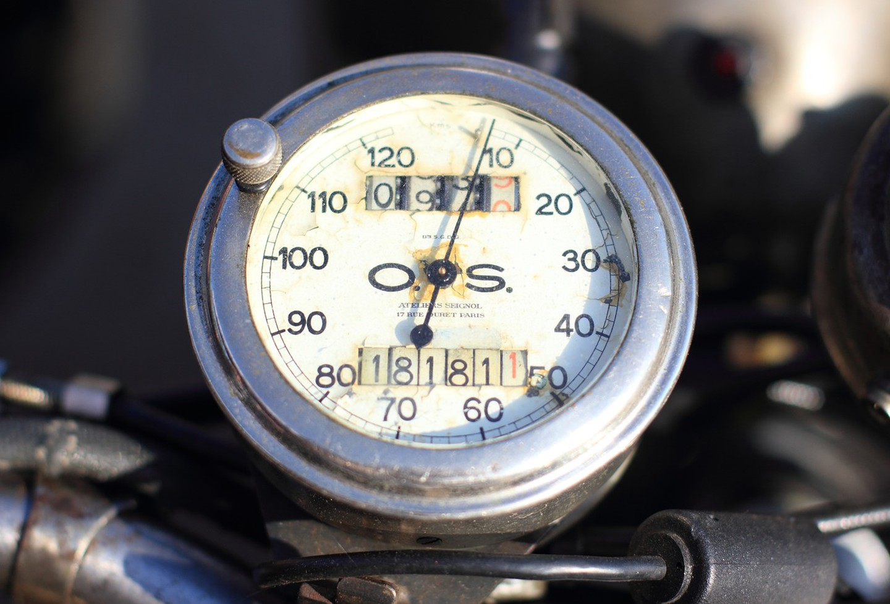If you've ever looked at a car's driver seat, you may have noticed circular things behind the wheel called odometers. They were first invented in ancient Greece and were used to calculate the distance between two places.
Clock Tower
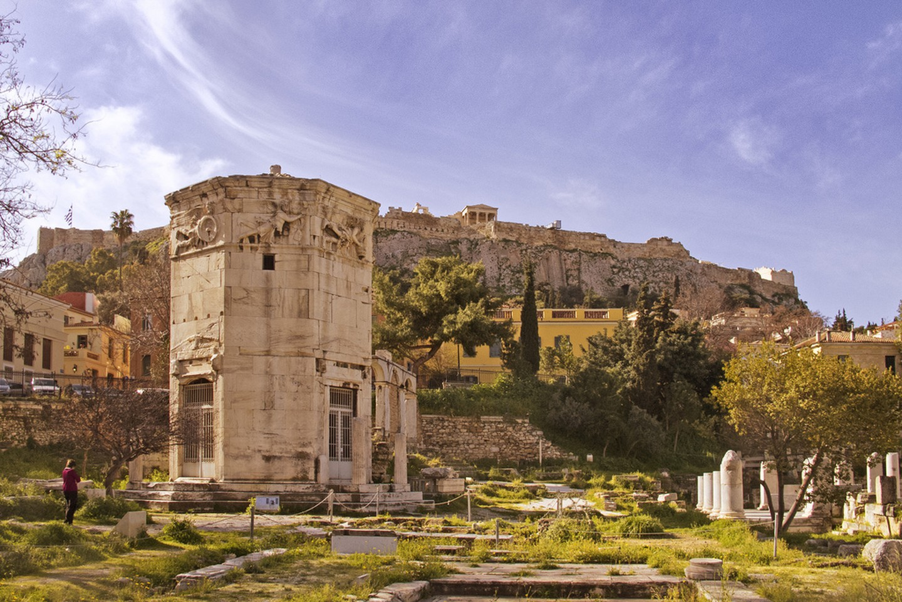The first clock tower, known as the Tower of the Winds, was built in Athens, in ancient Greece. It allowed merchants to estimate the time of delivery of their products, as well as serving as a weather station, and it still stands today in Plaka.
Vending Machines
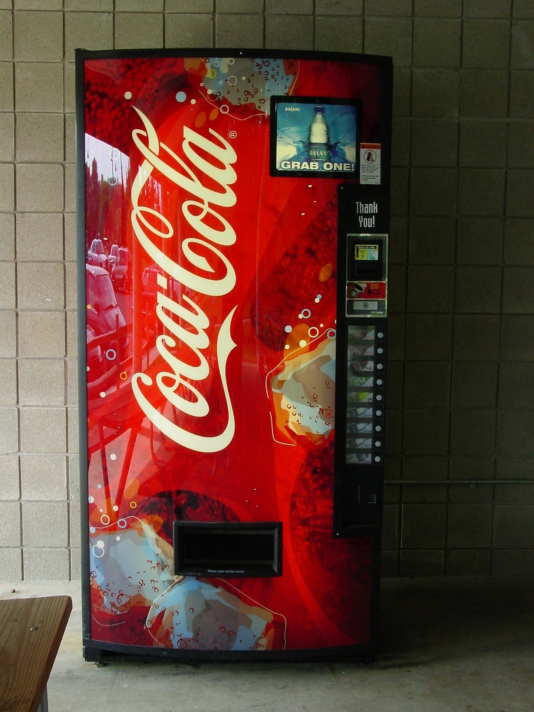Back in ancient Greece, the first vending machine was invented by Hero of Alexandria to dispense holy water to worshipers at the entrance of temples. The machine featured a mechanism that would release water once someone placed a coin in the slot.
Trial by Jury
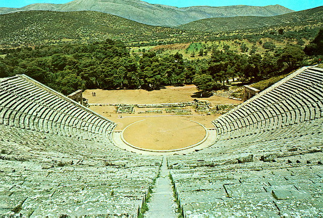The Greeks came up with trials by jury: trials where there were up to 500 people who would witness a case and contribute to the decision of what's going to happen to the culprit.
Cartography
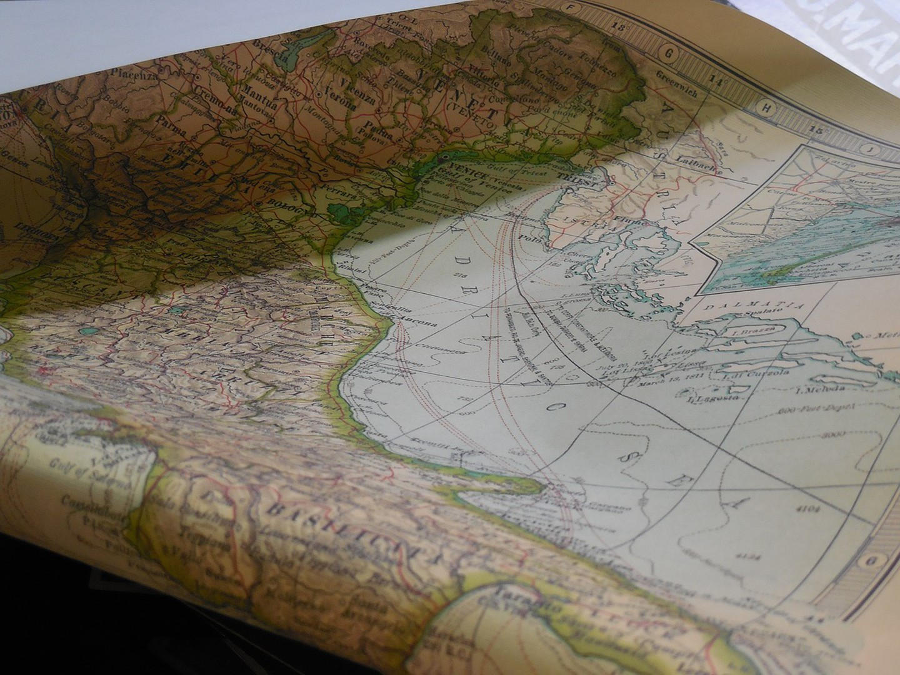Anaximander, a Greek cartographer was the first person to use the concept of latitude and longitude and use them when drawing maps. One of his maps represented the inhabited regions of the world at the time, featuring many known places.